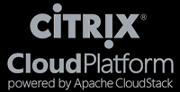

Chef & Apache CloudStack™
Cloud Systems automation and configuration management using Chef with
Apache CloudStack™ and/or
Citrix CloudPlatform™
Created by Jeff Moody / @fifthecho
#> whoami
Jeff Moody
- Cloud Engineer at Datapipe
- Managed Service Provider based in Jersey City, NJ
- Managed AWS Services (World's largest AWS reseller)
- Infrastructure-as-a-Service Platform built using Citrix CloudPlatform (Stratosphere)
- Managed Services on Stratosphere
- Primary author/maintainer of knife-cloudstack-fog, kitchen-cloudstack, CloudStack-PowerShell
Disclaimer
- My opinions are my own and not necessarily representative of my employer
- YMMV (Your Milage May Vary)
- No code is perfect, there may be bugs (please sent pull requests/submit issues if you find them)
What is Apache CloudStack™?

- Virtualization Orchestration Platform
- Private, Public, VPC Style Clouds
- Hypervisor Agnostic
- Xen
- KVM
- VMware ESXi (with VCenter)
- LXC
- Hyper-V
- Oracle VM (OVM)
- Bare Metal
- Docker support in development (announced last week)
What is Apache CloudStack™?
- Project founded in 2008
- Started by Cloud.com (First OSS release May 2010)
- Bought by Citrix (July 2011)
- Donated to ASF (April 2012)
- Accepted as an ASF Top-Level Project (March 2013)
- Written in Java/Tomcat
- Robust Native API
- Baked-in AWS EC2 Compatibility with SOAP and REST API
Then what is Citrix CloudPlatform™?

- Commercial release of CloudStack
- Deeper 3rd-Party Vendor integrations
- Non-Apache Licence Compatible Libraries/Tools
- Includes licensing for Citrix XenServer
CloudStack and Chef
- Why are there two knife plugins for CloudStack?
- What makes the two plugins different?
- What benefits does a knife plugin have over native API + knife bootstrap?
What is knife-cloudstack?
- Developed initially by Edmunds.
- Less API coverage than knife-cloudstack-fog
- Provides "stacks" for building multiple servers at once.
- David Nalley of Apache/Citrix looking at making this part of knife, not just knife-cloudstack
- Uses its own CloudStack API library.
What, then, is knife-cloudstack-fog?
- Forked from an earlier, pre-Edmunds knife-cloudstack which worked sometimes.
- Developed initially by me. Several contributors, but still mostly my project.
- Provides coverage for almost every CloudStack API call needed to manage infrastructure.
- Uses FOG for its CloudStack API calls.
What is FOG?

- Cloud-independent/agnostic toolkit for Ruby
- Initial CloudStack support added by Brian Dorry (also of Datapipe)
- Uniform-ish access to all Cloud resources (independent of provider) using common-ish language
- Used by Chef first-party knife plugins
What is knife?
- (Hopefully you know this already)
- CLI interface for Chef
- Built to be extensible and support plug-ins
- Many of these plug-ins are for VM provisioning
- Plugins include support for:
- AWS, CloudStack, OpenStack, Google Compute Engine, VMware, XenServer, Docker...
- Used to interact with Chef server and nodes
What does knife-cloudstack-fog provide?
- One-stop-shop for all information to manage CloudStack instances
** CLOUDSTACK COMMANDS **
knife cloudstack diskoffering list
knife cloudstack keypair create -k NAME (options)
knife cloudstack keypair delete NAME
knife cloudstack keypair list
knife cloudstack network create -n NAME -o NETWORKOFFERINGID -z ZONE (options)
knife cloudstack network delete ID
knife cloudstack network list
knife cloudstack networkoffering list
knife cloudstack portforwardingrule list
knife cloudstack publicip create (options)
knife cloudstack publicip list
knife cloudstack securitygroup list (options)
knife cloudstack server create -s SERVICEID -t TEMPLATEID -z ZONEID (options)
knife cloudstack server delete INSTANCE_ID
knife cloudstack server destroy INSTANCE_ID
knife cloudstack server list (options)
knife cloudstack server start INSTANCE_ID
knife cloudstack server stop INSTANCE_ID (options)
knife cloudstack serviceoffering list
knife cloudstack template list (options)
knife cloudstack volume list
knife cloudstack zone list
With all these options, what is the main thing we use this plugin for?
Provisioning servers!
knife cloudstack server create --help
knife cloudstack server create -s SERVICEID -t TEMPLATEID -z ZONEID (options)
--server-url URL Chef Server URL
--chef-zero-port PORT Port to start chef-zero on
--key KEY API Client Key
-A KEY, Your Cloudstack Access Key ID
--cloudstack-access-key-id
--cloudstack-api-endpoint ENDPOINT
Your Cloudstack API endpoint
-g, --groupids SECURITYGROUPIDS Comma separated list of CloudStack Security Group IDs.
-G SECURITYGROUPNAMES, Comma separated list of CloudStack Security Group names.
Each group name must be encapuslated in quotes if it
contains whitespace.
--groupnames
-w, --networkids NETWORKIDS Comma separated list of CloudStack network IDs.
-K SECRET, Your Cloudstack API Secret Access Key
--cloudstack-secret-access-key
-s, --serviceid SERVICEID The CloudStack service offering ID.
-t, --templateid TEMPLATEID The CloudStack template ID for the server.
-Z, --zoneid ZONE The CloudStack zone ID for the server.
--[no-]color Use colored output, defaults to false on Windows, true
otherwise
-c, --config CONFIG The configuration file to use
--defaults Accept default values for all questions
--disable-editing Do not open EDITOR, just accept the data as is
-D DISKOFFERINGID, Specifies either the Disk Offering ID for the
ROOT disk for an ISO template, or a DATA disk.
--diskoffering
-d, --distro DISTRO Bootstrap a distro using a template; default is 'chef-full'
-e, --editor EDITOR Set the editor to use for interactive commands
-E, --environment ENVIRONMENT Set the Chef environment
-F, --format FORMAT Which format to use for output
-H, --hostname NAME The instance host name
-i PRIVATE_KEY_FILE, The Private key file for authenticating SSH session.
--keypair option is also needed.
--identity-file
-k, --keypair KEYPAIR The CloudStack Key Pair to use for SSH key authentication.
-z, --local-mode Point knife commands at local repository instead of server
-u, --user USER API Client Username
--print-after Show the data after a destructive operation
--random-ssh-port Map a random, unused high-level port to 22 for SSH and
creates a port forward for this mapping. For Isolated
Networking and VPC only.
-r, --run-list RUN_LIST Comma separated list of roles/recipes to apply
-N, --display-name NAME The instance display name
--size SIZE Specifies the arbitrary Disk Size for DATADISK volume in GB.
Must be passed with custom size Disk Offering ID.
-W, --ssh-gateway GATEWAY The ssh gateway server. Connection is defined as
USERNAME@HOST:PORT
-P, --ssh-password PASSWORD The ssh password
-p, --ssh-port PORT The port which SSH should be listening on.
If unspecified, will default to 22.
-x, --ssh-user USERNAME The ssh username
--template-file TEMPLATE Full path to location of template to use
-V, --verbose More verbose output. Use twice for max verbosity
-v, --version Show chef version
-y, --yes Say yes to all prompts for confirmation
-h, --help Show this message
With all those options, how do we start?
- Pick a Zone
- Pick a Template
- Pick a Service Offering
- Pick a Network/Security Group
- Add any additional options
Then, launch the VM!
knife cloudstack zone list
No configurable options
knife cloudstack zone list
ID Name Network Type Security Groups?
3 New York Metro EPN Advanced No
5 New York Metro Advanced Yes
6 Hong Kong Advanced Yes
7 Silicon Valley Advanced Yes
8 Hong Kong EPN Advanced No
9 London Advanced Yes
11 Shanghai Advanced Yes
12 London EPN Advanced No
13 Silicon Valley EPN Advanced No
14 Shanghai EPN Advanced No
08e8fdf1-f64a-4ab6-bd21-7bffd578be9e Iceland EPN Advanced No
e20be308-482b-4d10-8885-cea306e87de9 Silicon Valley 2 Advanced Yes
cb765f1b-2638-465e-9c3d-9013e04116da Silicon Valley 2 EPN Advanced No
51345d53-bf3b-4280-b5dd-8541703eff9a Singapore EPN Advanced No
4baf6857-c7db-437a-96e6-f420761e128c Singapore Advanced Yes
knife cloudstack template list --help
knife cloudstack template list (options)
-s, --server-url URL Chef Server URL
--chef-zero-port PORT Port to start chef-zero on
-k, --key KEY API Client Key
-A KEY, Your Cloudstack Access Key ID
--cloudstack-access-key-id
--cloudstack-api-endpoint ENDPOINT
Your Cloudstack API endpoint
-K SECRET, Your Cloudstack API Secret Access Key
--cloudstack-secret-access-key
--[no-]color Use colored output, defaults to false on
Windows, true otherwise
-c, --config CONFIG The configuration file to use
--defaults Accept default values for all questions
-d, --disable-editing Do not open EDITOR, just accept the data as is
-e, --editor EDITOR Set the editor to use for interactive commands
-E, --environment ENVIRONMENT Set the Chef environment
-L, --filter FILTER The template search filter. Default is 'featured.'
Other options are 'self,' 'self-executable,'
'executable,' and 'community.'
-F, --format FORMAT Which format to use for output
-H, --hypervisor HYPERVISOR Limit responses to templates only running on a
specific hypervisor. Default provides templates
from all hypervisors.
--local-mode Point knife commands at local repository instead
of server
-u, --user USER API Client Username
--print-after Show the data after a destructive operation
-T, --templateid TEMPLATEID Limit responses to a single template ID.
Default provides all templates.
-V, --verbose More verbose output. Use twice for max verbosity
-v, --version Show chef version
-y, --yes Say yes to all prompts for confirmation
-Z, --zone ZONE Limit responses to templates only located in a
specific zone. Default provides templates from all zones.
-z, --zoneid ZONEID Limit responses to templates only running in a
specific zone (specified by ID #). Default provides
templates from all zones.
-h, --help Show this message
knife cloudstack template list
knife cloudstack template list
ID Hypervisor Size (in GB) Zone Name Zone ID Name
086ce1e1-3e92-4a9e-b416-2dd5445c1e7f VMware 20 Iceland EPN 08e8fdf1-f64a-4ab6-bd21-7bffd578be9e Datapipe: Oracle Enterprise Linux 5 (64-bit)
1573395c-7489-4a93-9ca3-11a51a285457 VMware 20 Iceland EPN 08e8fdf1-f64a-4ab6-bd21-7bffd578be9e Datapipe: CentOS 5 (64-bit)
d16563da-64c6-4358-b6e6-0c313c43223c VMware 20 Iceland EPN 08e8fdf1-f64a-4ab6-bd21-7bffd578be9e Datapipe: CentOS 6 (64-bit)
187dc53e-8f4b-405b-9067-7ee056c75fcc VMware 20 Iceland EPN 08e8fdf1-f64a-4ab6-bd21-7bffd578be9e Datapipe: Ubuntu 12.04 (64-bit)
20e58c82-2b7b-4552-adb2-59d4f28021cd VMware 40 Iceland EPN 08e8fdf1-f64a-4ab6-bd21-7bffd578be9e Datapipe: Windows Server 2008 R2 English 64-bit
27b96e7e-7315-48f2-8ac0-4a4aa7cc7e14 VMware 20 Iceland EPN 08e8fdf1-f64a-4ab6-bd21-7bffd578be9e Datapipe: Scientific 6 (64-bit)
27fa2e69-ad13-43c2-b000-56cce241f769 VMware 20 Iceland EPN 08e8fdf1-f64a-4ab6-bd21-7bffd578be9e Datapipe: Red Hat Enterprise Linux 6 (64-bit)
88c62685-b6f5-4acc-9ca4-9b937e5112b5 XenServer 20 Iceland EPN 08e8fdf1-f64a-4ab6-bd21-7bffd578be9e Datapipe: CentOS 5-64Bit-xen
0f755a47-92bf-4bbf-beb0-bb3fc2ae6c91 VMware 20 Iceland EPN 08e8fdf1-f64a-4ab6-bd21-7bffd578be9e Datapipe: Red Hat Enterprise Linux 5 (64-bit)
a494ea35-e64f-40d4-a30c-b5c9dc1971bd VMware 20 Iceland EPN 08e8fdf1-f64a-4ab6-bd21-7bffd578be9e Datapipe: FreeBSD 9.2 (64-bit)
...
knife cloudstack serviceoffering list
No configurable options
knife cloudstack serviceoffering list
ID Name Description Number of CPUs CPU Speed Memory (in MB) Network Speed
f26eb96f-98d5-4f34-81b0-d817c81227a2 kilo-1-40-hpc 1 CPU core, 4G memory, high performance root volume 1 2400 4096 1000
2b9a7b24-c977-467e-b0c8-eb0c97512f22 nano-h-5-hpc 0.5 CPU core, 512MB memory, high performance root volume 1 1200 512 1000
9d865b43-296e-4ea6-83a2-122bc9baf6ac nano-h-10-hpc 0.5 CPU core, 1G memory, high performance root volume 1 1200 1024 1000
39 mega-2-160 2 CPU core, 16G memory, standard root volume 2 2400 16384 1000
29ef5f70-8346-472a-9f84-f00a1fd727a7 kilo-4-80-hpc 4 CPU core, 8G memory, high performance root volume 4 2400 8192 1000
38 mega-4-160 4 CPU core, 16G memory, standard root volume 4 2400 16384 1000
4414bc19-7ee8-443f-80cc-0b19ff274ad9 nano-1-10-hpc 1 CPU core, 1G memory, high performance root volume 1 2400 1024 1000
37 mega-8-160 8 CPU core, 16G memory, standard root volume 8 2400 16384 1000
10f888d6-f6aa-4ebb-8f40-9acc5c4f0fa4 kilo-1-20-hpc 1 CPU core, 2G memory, high performance root volume 1 2400 2048 1000
...
knife cloudstack network list
Used for Advanced Isolated or Advanced VPC Zones
knife cloudstack network list
ID Name Zone ID VLAN State
1a036de9-dd01-4f9a-af80-f5deac2d6131 Demo1 3 allocated
4cbc9ef7-d276-4858-beb0-ce6643a247b8 TestingNetwork 3 allocated
91b06fd1-bf74-4d02-a28a-0d9aca3d5fd5 SiliconValleyEPNTest 13 allocated
623 Default Network 12 implemented
535 Default Network 3 implemented
3d4af98c-7787-417a-8e26-8f265129e7c3 defaultGuestNetwork 4baf6857-c7db-437a-96e6-f420761e128c setup
1124 Shared SG enabled network 5 setup
...
knife cloudstack securitygroup list
Used for Basic or Advanced with Security Groups Zones
knife cloudstack securitygroup list
ID Name Description
129 default Default Security Group
295 Network Testing
320 Chef Server
324 TestSG
432 Puppet Server
f2bf049f-8c6b-4b8f-87d1-4846da688dbf AppTesting
...
knife cloudstack server create
knife cloudstack server create -Z 4baf6857-c7db-437a-96e6-f420761e128c -t b5870d22-e586-4da9-add5-100dc1c18a9f -s 4122c0ae-85a4-4696-938a-80df3a6b6508 -g 4c4219b7-1d55-4e6e-84e8-5d1435198df7,f2bf049f-8c6b-4b8f-87d1-4846da688dbf -k Test_key
Waiting for server....
Name: 0bdb2cd0-d991-4d3c-8c4e-809597dfaf05
Primary IP: 64.106.186.210
Username: root
Password: jA2rszsie
Waiting for SSH.
Other information is available from
knife-cloudstack-fog for:
- disk offerings
- Creating data-disks with instances
- Creating VMs from ISO templates for the ROOT disk
- keypairs
- Assumes that the cloud-set-guest-sshkey is in place.
- Supports creation of and deletion of keypairs (end user feature request)
- networks
- Supports creation and deletion of networks (for Advanced Zones)
- portforwardingrules
- For Advanced Zone networks, NAT rules can be created with knife
- Server stop/start
- SSH Gateway
- Random port forwarding (for Advanced Zones)
Future
- Move code to knife-cloud?
- One plugin for all Clouds
- Common semantics
- LOTS of work to do
- Merge with knife-cloudstack?
- Unlikely as some core knife-cloudstack devs are anti-FOG
- knife-cloudstack-fog more feature rich, minus stacks and system VMs
- Tests
- There currently are no tests.
- I don't know how to write tests (as of March 2014)
- If someone wants to start writing tests, please do!
Bonus content!
There is a Test Kitchen driver for CloudStack/CloudPlatform! (...and I wrote it!)
The setup for the driver is on the GitHub page
(https://github.com/test-kitchen/kitchen-cloudstack)
There's also a Vagrant driver for CloudStack/CloudPlatform (...and I didn't write it!)
So, how do I get in on this?
- Datapipe Stratosphere
- Global IaaS Platform running on Citrix CloudPlatform
- http://www.datapipe.com/cloud/stratosphere/
- Install Apache CloudStack™
- Available from YUM and apt repositories for EL-6 and Ubuntu 12.04
- http://cloudstack.apache.org/
- I've built a Docker build script for CloudStack!
- Still under heavy work.
- Definitely not recommended for production.
- https://github.com/fifthecho/docker-cloudstack-management
- (Currently coordinating with CloudStack peoples on how we want this in the Docker Index)
Questions?
Jeff Moody
- Datapipe (http://www.datapipe.com)
- E-Mail: jmoody@datapipe.com / fifthecho@gmail.com
- GitHub: https://github.com/fifthecho
- Twitter: @fifthecho
- YouTube: https://www.youtube.com/user/fifthecho